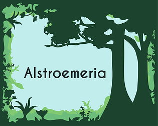

Hello, I'm Elaine
I am a first-year PhD student at NYU Tandon's Department of Computer Science and Engineering, where I am co-advised by Rosie Bellini and Damon McCoy.
Research
My research interests are in privacy, security, and human-computer interaction. Using in-depth qualitative and data-driven methods, I hope my research will help preserve people's dignity and autonomy online. My publications include:
Understanding Enforcement Mechanisms in Social Media Community Guidelines
Heila Precel, Elaine Lee, Anissa Patel, Ben Klingensmith, Deepak Kumar, Allison McDonald. 32nd ACM Conference on Computer and Communications Security (CCS), 2025 [Submitted]
Heila Precel, Elaine Lee, Anissa Patel, Ben Klingensmith, Deepak Kumar, Allison McDonald. 32nd ACM Conference on Computer and Communications Security (CCS), 2025 [Submitted]
Games
When I was an undergrad at Columbia, I led CU Game Dev, a small but mighty community of artists, programmers, and writers. Here is some of my best game development work:

Alstroemeria
The ecosystem in Alstromeria is deteriorating, and the mutated pollen are spilling over to our reality, transforming humans into spirits. It is up to you, an undergrad research assistant, to help find the cure by traveling through Alstroemeria. Play here.